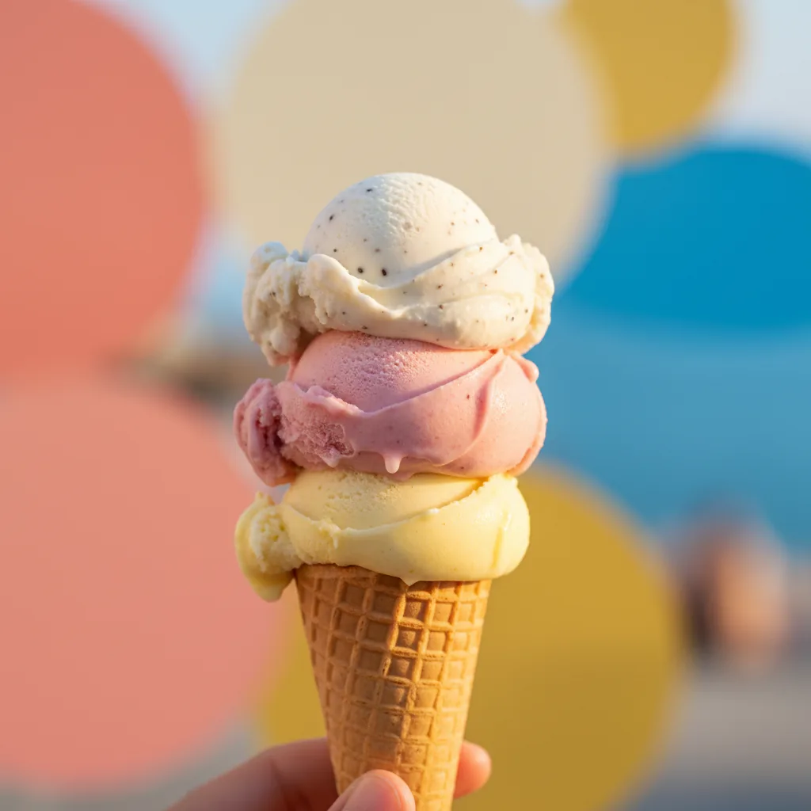
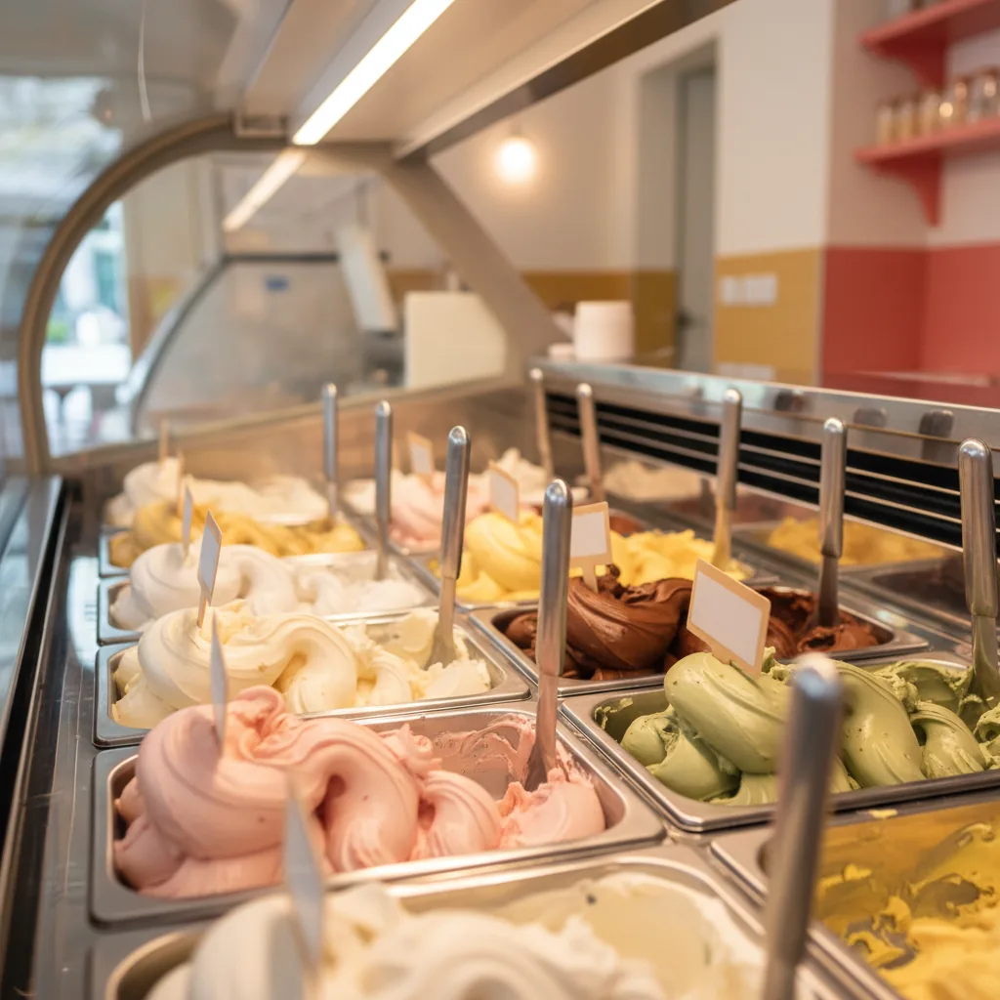
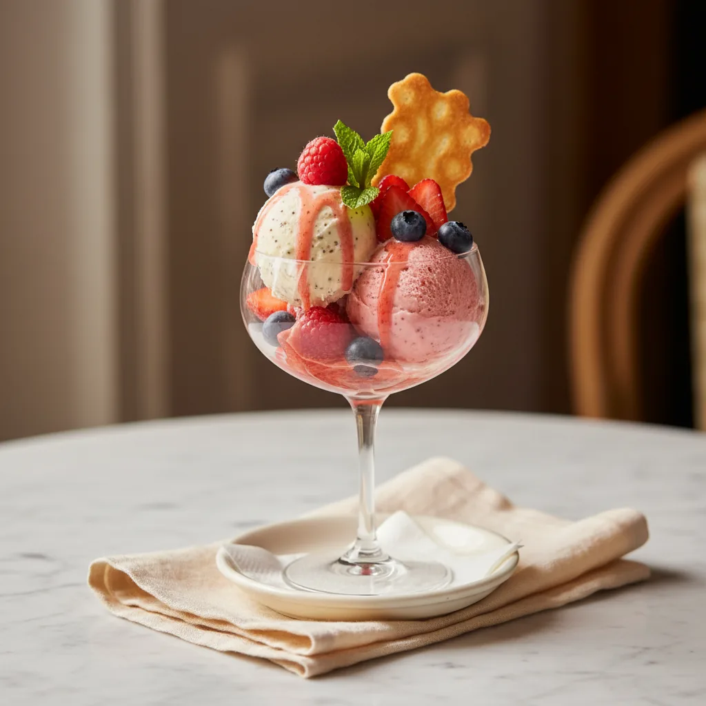

Paseo del Arenal · Calpe
Helado artesanal en el paseo.
Cremas, sorbetes y helados de fruta hechos cada día. Para el cucurucho de las cinco o la copa de después de cenar.

Zona
Paseo del Arenal
Calpe
Calpe
Estilo
Heladería
artesanal
artesanal
Producción
Hecho
cada día
cada día
Para
Cucurucho
tarrina o copa
tarrina o copa
Nuestros sabores
Cuatro familias, una vitrina que cambia.
La carta no es fija. Trabajamos por familias y rotamos sabores con la temporada y lo que llega del mercado.
Cremas
Base láctea clásica
vainilla, chocolate, frutos secos…
vainilla, chocolate, frutos secos…
Vitrina
Sorbetes
Sin lácteos
frescos y ligeros
frescos y ligeros
Vitrina
Frutas
De temporada
fresa, limón, mango…
fresa, limón, mango…
Vitrina
Especiales
Receta de la casa
rotación corta
rotación corta
Vitrina
Para todos
Que nadie se quede sin helado.
Tenemos opciones aptas para distintas dietas. Pregunta en mostrador qué hay disponible hoy.
Sin lactosa
Para intolerantes a la lactosa.
Sorbetes y helados de fruta sin base láctea. Disponibilidad según vitrina del día.
Sin gluten
Sin gluten en la base.
Helados aptos para celíacos. Cucuruchos sin gluten y tarrinas para llevar.
[Variedades exactas y certificaciones a confirmar in situ]
Galería
El verano tiene dos pecas.
Un vistazo a lo que vas a encontrar — colores, texturas y el paseo de fondo.

